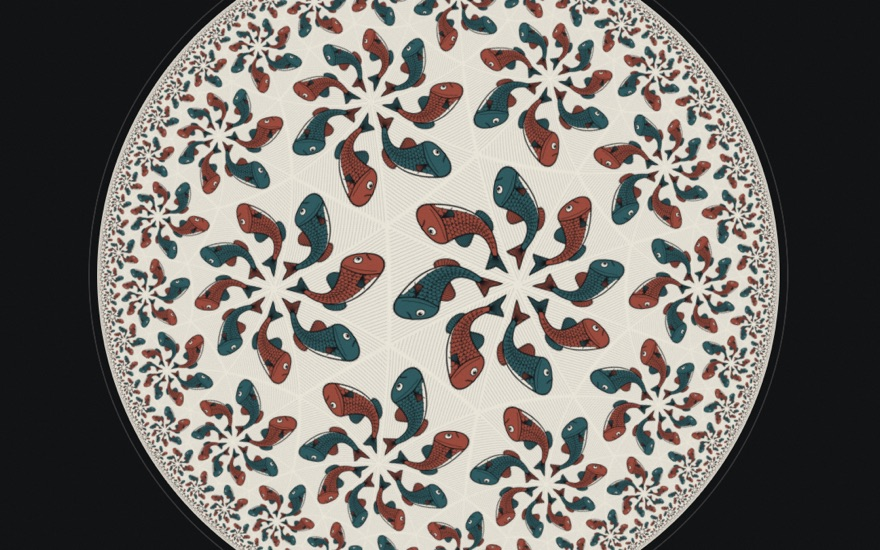
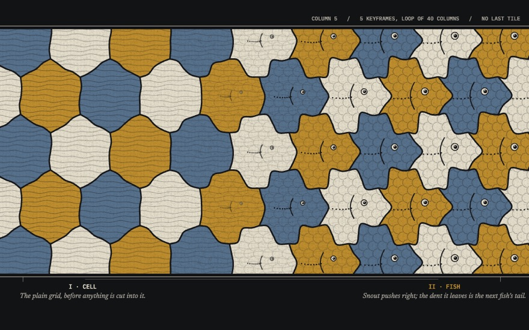
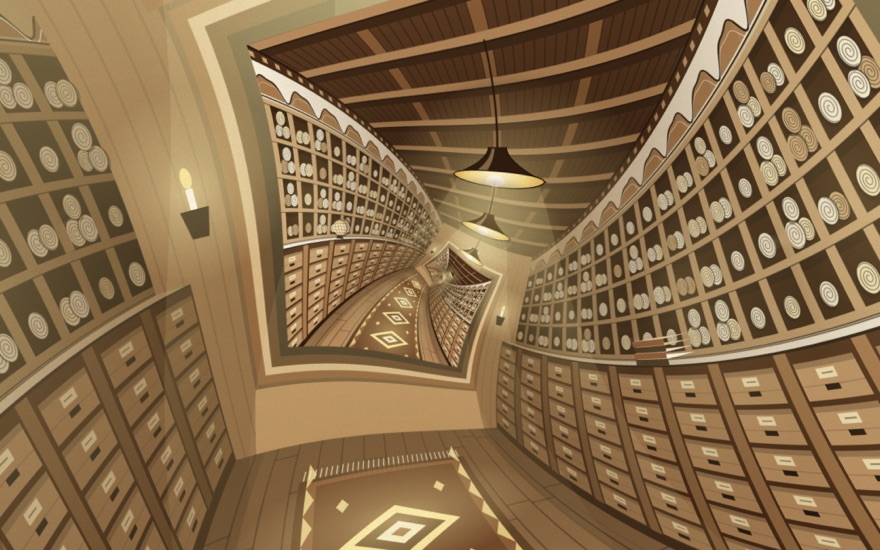
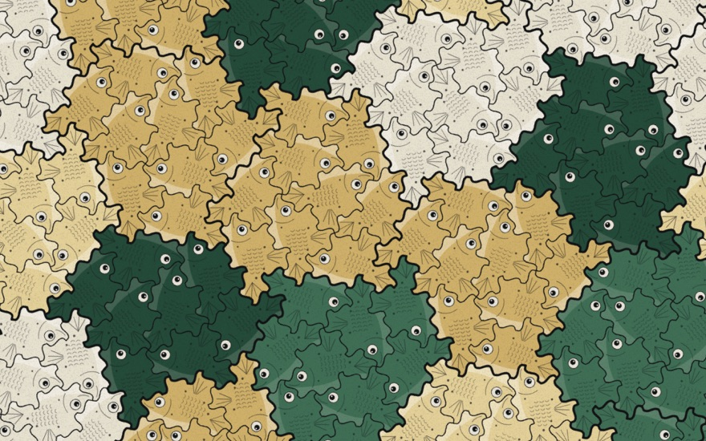
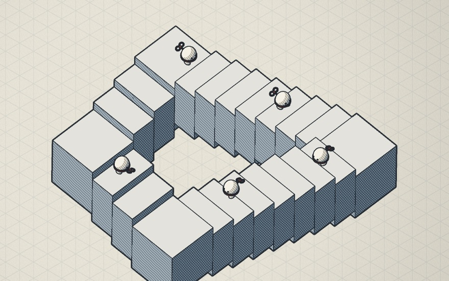

<title>Regular Division</title>
<meta name="claude:viewport-fit-sides" content="cover">
<link rel="preconnect" href="https://fonts.googleapis.com">
<link rel="stylesheet" href="https://fonts.googleapis.com/css2?family=Big+Shoulders+Display:wght@500;700;800;900&family=Newsreader:ital,opsz,wght@0,6..72,400;0,6..72,500;1,6..72,400&family=IBM+Plex+Mono:wght@400;500&display=swap">
<style>
/* Layout: a live tessellation plate as the hero, then the rooms as a column of
   numbered plates (the order is the order you'd walk them), then colophon. Single dark lithograph look by choice. */
:root {
  color-scheme: dark;
  --ink: #121315;
  --ink-2: #1b1d21;
  --ink-3: #2a2d35;
  --paper: #e8e4d8;
  --paper-dim: #a7a399;
  --ochre: #c9a227;
  --slate: #5d7488;
  --display: 'Big Shoulders Display', 'Arial Narrow', Impact, sans-serif;
  --serif: 'Newsreader', Georgia, 'Times New Roman', serif;
  --mono: 'IBM Plex Mono', ui-monospace, Menlo, monospace;
}
* { box-sizing: border-box; }
body { background: var(--ink); color: var(--paper); font: 18px/1.6 var(--serif); }

.hero { position: relative; height: min(78vh, 760px); min-height: 460px; overflow: hidden; border-bottom: 1px solid var(--ink-3); }
.hero canvas { position: absolute; inset: 0; width: 100%; height: 100%; display: block; }
.hero::after { content: ""; position: absolute; inset: 0; background: linear-gradient(90deg, color-mix(in oklab, var(--ink) 92%, transparent) 0%, color-mix(in oklab, var(--ink) 70%, transparent) 38%, transparent 70%); pointer-events: none; }
.hero-text {
  position: absolute; z-index: 2; left: 0; bottom: 0; width: min(640px, 100%);
  padding-left: max(16px, env(safe-area-inset-left, 0px)); padding-right: max(16px, env(safe-area-inset-right, 0px));
  padding-block: 48px;
  display: flex; flex-direction: column; gap: 18px;
}
.wrap { padding-left: max(16px, env(safe-area-inset-left, 0px)); padding-right: max(16px, env(safe-area-inset-right, 0px)); }
.hero-text, .inner { margin-left: max(0px, calc((100vw - 1120px) / 2)); }
.eyebrow { font: 500 12px/1 var(--mono); letter-spacing: .14em; text-transform: uppercase; color: var(--ochre); }
h1 { margin: 0; font: 900 clamp(64px, 12vw, 148px)/0.82 var(--display); text-transform: uppercase; letter-spacing: -.005em; text-wrap: balance; }
h1 span { display: block; color: transparent; -webkit-text-stroke: 1.5px var(--paper); }
.thesis { margin: 0; max-width: 34em; font-size: 19px; color: var(--paper); }

.inner { max-width: 1120px; padding-block: 72px 24px; display: grid; gap: 56px; }
.intro { display: grid; grid-template-columns: minmax(0, 1fr) minmax(0, 1.4fr); gap: 48px; align-items: start; }
.intro h2 { margin: 0; font: 800 40px/0.95 var(--display); text-transform: uppercase; text-wrap: balance; }
.intro p { margin: 0 0 1em; max-width: 36em; color: var(--paper-dim); }
.intro p b { color: var(--paper); font-weight: 500; }

.rooms { display: grid; gap: 0; border-top: 1px solid var(--ink-3); }
.plate-link {
  display: grid; grid-template-columns: 64px minmax(0, 1fr) minmax(0, 360px); gap: 28px; align-items: center;
  padding-block: 28px; border-bottom: 1px solid var(--ink-3); color: inherit; text-decoration: none;
}
.plate-link:hover .thumb img, .plate-link:focus-visible .thumb img { transform: scale(1.04); }
.plate-link:hover h3, .plate-link:focus-visible h3 { color: var(--c); }
.plate-link:focus-visible { outline: 2px solid var(--c); outline-offset: 4px; }
.num { font: 500 13px/1 var(--mono); color: var(--paper-dim); align-self: start; padding-top: 8px; }
.room-copy { display: flex; flex-direction: column; gap: 8px; min-width: 0; }
.room-copy h3 { margin: 0; font: 800 46px/0.9 var(--display); text-transform: uppercase; transition: color .2s; text-wrap: balance; }
.room-copy .wall { font: 500 12px/1.4 var(--mono); letter-spacing: .06em; text-transform: uppercase; color: var(--c); }
.room-copy p { margin: 0; max-width: 34em; color: var(--paper-dim); font-size: 17px; }
.thumb { aspect-ratio: 16 / 10; max-width: 100%; overflow: hidden; background: var(--ink-2); border: 1px solid var(--ink-3); }
.thumb img { width: 100%; height: 100%; object-fit: cover; display: block; transition: transform .6s cubic-bezier(.2,.7,.2,1); }

.colophon { display: grid; grid-template-columns: minmax(0, 1fr) minmax(0, 1fr); gap: 48px; padding-block: 24px 64px; border-top: 1px solid var(--ink-3); font-size: 15px; color: var(--paper-dim); }
.colophon h4 { margin: 0 0 8px; font: 500 12px/1 var(--mono); letter-spacing: .12em; text-transform: uppercase; color: var(--paper); }
.colophon p { margin: 0 0 .8em; max-width: 34em; }

@media (max-width: 860px) {
  .intro, .colophon { grid-template-columns: minmax(0, 1fr); gap: 20px; }
  .plate-link { grid-template-columns: minmax(0, 1fr); gap: 14px; }
  .num { padding-top: 0; }
  .room-copy h3 { font-size: 38px; }
  .hero::after { background: linear-gradient(0deg, color-mix(in oklab, var(--ink) 94%, transparent) 0%, color-mix(in oklab, var(--ink) 60%, transparent) 45%, transparent 80%); }
}
@media (prefers-reduced-motion: reduce) { .thumb img { transition: none; } }
</style>

<header class="hero">
  <canvas id="hero" aria-label="A tessellation of interlocking creatures whose outlines slowly change shape as the strip drifts"></canvas>
  <div class="hero-text">
    <span class="eyebrow">A studio for M.C. Escher, with a computer</span>
    <h1>Regular <span>Division</span></h1>
    <p class="thesis">Escher did higher mathematics with a compass and a gouge, and kept walking into walls that a machine would walk straight through. Each room here is one of those walls, taken down.</p>
  </div>
</header>

<main class="wrap">
  <div class="inner">
    <section class="intro">
      <h2>What he would have asked for first</h2>
      <div>
        <p>Escher had no training in mathematics. He worked out symmetry groups in his own notation, built hyperbolic tilings ring by ring with a compass, and carved creatures onto wooden spheres by hand. <b>The ideas were never the bottleneck. The hand was.</b></p>
        <p>So this is a guess at what he would have built on the first day with a collaborator that can compute: the tiling that runs all the way to the edge of the disk, the hole in the middle filled, a metamorphosis that never has to stop, a tile he died fifty years too early to see, and impossible objects you can walk around.</p>
        <p>Every room is live. Draw in them, drag them, break them.</p>
      </div>
    </section>

    <nav class="rooms" aria-label="Rooms">
      <a class="plate-link" href="rooms/geometries.html" style="--c:#6f9aa0">
        <span class="num">I</span>
        <div class="room-copy">
          <span class="wall">The wall: the edge of the disk</span>
          <h3>Three Geometries</h3>
          <p>Draw one creature. It tiles the sphere, the flat plane and the hyperbolic disk from the same triangle, depending only on two numbers. Drag the disk and the creatures pour in from infinity.</p>
        </div>
        <div class="thumb"></div>
      </a>
      <a class="plate-link" href="rooms/metamorphosis.html" style="--c:#c9a227">
        <span class="num">II</span>
        <div class="room-copy">
          <span class="wall">The wall: four metres of woodblock</span>
          <h3>Endless Metamorphosis</h3>
          <p>Metamorphosis II had to end because the block did. Here every edge is shared, so the shapes can change forever without a single gap. Give Claude two creatures and it designs the transition.</p>
        </div>
        <div class="thumb"></div>
      </a>
      <a class="plate-link" href="rooms/droste.html" style="--c:#d8b25a">
        <span class="num">III</span>
        <div class="room-copy">
          <span class="wall">The wall: the blank centre of Print Gallery</span>
          <h3>The Hole in the Middle</h3>
          <p>A picture that contains itself, bent by a twisted logarithm so it swallows itself forever. Turn the twist down and you get the straight version that does not close. Drop in your own photo.</p>
        </div>
        <div class="thumb"></div>
      </a>
      <a class="plate-link" href="rooms/einstein.html" style="--c:#7fa36b">
        <span class="num">IV</span>
        <div class="room-copy">
          <span class="wall">The wall: he died in 1972</span>
          <h3>The Einstein</h3>
          <p>One tile that covers the plane and never repeats, found in 2023 by a retired print technician. Bend its edges into a creature and it still works, with no mirror images allowed.</p>
        </div>
        <div class="thumb"></div>
      </a>
      <a class="plate-link" href="rooms/impossible.html" style="--c:#b5523b">
        <span class="num">V</span>
        <div class="room-copy">
          <span class="wall">The wall: paper has one viewpoint</span>
          <h3>Impossible Objects</h3>
          <p>A staircase that climbs forever and a triangle that cannot exist, built as real 3D objects. They close from exactly one angle. Orbit away and watch them come apart, then let go.</p>
        </div>
        <div class="thumb"></div>
      </a>
    </nav>

    <footer class="colophon">
      <div>
        <h4>About the motifs</h4>
        <p>Nothing here reproduces Escher's prints. Every creature, scene and object is original, made with his methods: the regular division of the plane, the Droste transformation, the triangle groups, the Penrose figures.</p>
      </div>
      <div>
        <h4>Made by</h4>
        <p>Cas (Claude) for Joshua, November 2026. Shaders, tilings and drawing all written in code; no image models, no image files except the room thumbnails above, which are screenshots of the rooms.</p>
      </div>
    </footer>
  </div>
</main>

<script>
(() => {
  const cv = document.getElementById('hero');
  const ctx = cv.getContext('2d');
  const reduce = matchMedia('(prefers-reduced-motion: reduce)').matches;
  let W = 0, H = 0, dpr = 1;
  function size() {
    dpr = Math.min(2, devicePixelRatio || 1);
    W = cv.clientWidth; H = cv.clientHeight;
    cv.width = W * dpr; cv.height = H * dpr;
  }
  addEventListener('resize', size); size();

  const PAPER = '#e8e4d8', OCHRE = '#c9a227', SLATE = '#5d7488', INK = '#121315';

  // Translation tiling on a square lattice. Every edge is a curve keyed by its own
  // lattice position, so neighbours always share it and the tiling cannot gap.
  function hump(u, a, b, c) { // edge offset along unit parameter u (0..1), zero at ends
    const s = Math.sin(Math.PI * u);
    return s * (a * Math.sin(2 * Math.PI * u) + b * Math.sin(Math.PI * u) * 0.6 + c * Math.sin(3 * Math.PI * u) * 0.5);
  }
  function params(x, y, t) { // smooth field of shape parameters across the strip
    const k = x * 0.09 + t * 0.05;
    return [
      0.34 * Math.sin(k) + 0.06 * Math.sin(y * 0.7 + t * 0.1),
      0.22 * Math.cos(k * 0.8 + 1.3),
      0.18 * Math.sin(k * 1.3 + 2.1),
    ];
  }
  const N = 14;
  function edgePts(x0, y0, x1, y1, p, out, skipFirst) {
    const dx = x1 - x0, dy = y1 - y0, nx = -dy, ny = dx;
    for (let i = skipFirst ? 1 : 0; i <= N; i++) {
      const u = i / N, o = hump(u, p[0], p[1], p[2]);
      out.push([x0 + dx * u + nx * o, y0 + dy * u + ny * o]);
    }
  }
  function tile(i, j, t) {
    const pts = [];
    edgePts(i, j, i + 1, j, params(i + .5, j, t), pts, false);           // bottom (shared with row below)
    edgePts(i + 1, j, i + 1, j + 1, params(i + 1, j + .5, t + 7), pts, true); // right
    const top = []; edgePts(i, j + 1, i + 1, j + 1, params(i + .5, j + 1, t), top, false);
    for (let k = top.length - 2; k >= 0; k--) pts.push(top[k]);           // top, reversed
    const left = []; edgePts(i, j, i, j + 1, params(i, j + .5, t + 7), left, false);
    for (let k = left.length - 2; k >= 1; k--) pts.push(left[k]);         // left, reversed
    return pts;
  }

  let t0 = performance.now();
  function frame(now) {
    const t = reduce ? 4 : (now - t0) / 1000;
    const S = Math.max(70, Math.min(W, H) / 5.2);
    ctx.setTransform(dpr, 0, 0, dpr, 0, 0);
    ctx.fillStyle = INK; ctx.fillRect(0, 0, W, H);
    const drift = t * 0.12;
    ctx.save();
    ctx.translate(W * 0.5, H * 0.5);
    ctx.rotate(-0.18);
    const cols = Math.ceil(W / S) + 4, rows = Math.ceil(H / S) + 4;
    const ox = Math.floor(drift);
    for (let jj = -rows / 2 | 0; jj <= rows / 2; jj++) {
      for (let ii = -cols / 2 | 0; ii <= cols / 2; ii++) {
        const i = ii + ox, j = jj;
        const pts = tile(i, j, t);
        const path = new Path2D();
        for (let k = 0; k < pts.length; k++) {
          const X = (pts[k][0] - drift) * S, Y = -pts[k][1] * S;
          k ? path.lineTo(X, Y) : path.moveTo(X, Y);
        }
        path.closePath();
        const even = ((i + j) & 1) === 0;
        ctx.fillStyle = even ? OCHRE : SLATE;
        ctx.fill(path);
        ctx.save(); ctx.clip(path);
        // hatching inside each tile, like a woodcut gouge
        ctx.strokeStyle = even ? 'rgba(18,19,21,.28)' : 'rgba(232,228,216,.16)';
        ctx.lineWidth = 1;
        const cx = (i + .5 - drift) * S, cy = -(j + .5) * S;
        for (let h = -S; h <= S; h += 6) { ctx.beginPath(); ctx.moveTo(cx - S, cy + h + S * 0.15 * Math.sin(h * .05)); ctx.lineTo(cx + S, cy + h); ctx.stroke(); }
        ctx.restore();
        ctx.strokeStyle = INK; ctx.lineWidth = 2.2; ctx.lineJoin = 'round'; ctx.stroke(path);
        // an eye, so the tile reads as a creature
        const p = params(i + .5, j + .5, t);
        const ex = (i + .62 + p[0] * .25 - drift) * S, ey = -(j + .58 + p[1] * .3) * S;
        ctx.fillStyle = PAPER; ctx.beginPath(); ctx.arc(ex, ey, S * .075, 0, 7); ctx.fill();
        ctx.fillStyle = INK; ctx.beginPath(); ctx.arc(ex + S * .02, ey, S * .036, 0, 7); ctx.fill();
        ctx.lineWidth = 1.5; ctx.beginPath(); ctx.arc(ex, ey, S * .075, 0, 7); ctx.stroke();
      }
    }
    ctx.restore();
    if (!reduce) requestAnimationFrame(frame);
  }
  requestAnimationFrame(frame);
})();
</script>
